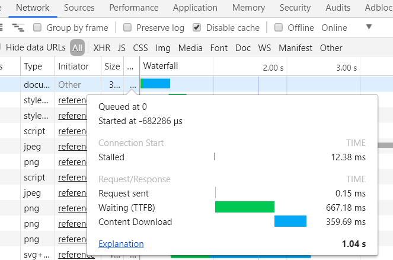
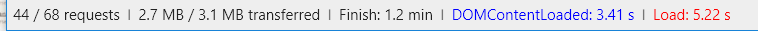

指尖上行，移动前端开发进阶之路笔记-5
页面性能优化
优化原理
一个网站即使内容丰富，界面美观，但若打开速度慢或显示慢，那么就很难给用户留下好印象，无法留下用户。
随着互联网的发展，内容越来越多，对带宽、服务器及用户设备的要求越来越高，过多的代码不仅影响服务器、带宽、用户访问的成本，更会影响用户体验。
优化思路：
全局观优化
在一般的情况下，开发者只要把本分工作做好就行，但这种认识是不够的，同样的事情用不一样的眼光去看待就会不一样，那么优化，用不一样的方式结果也不会一样，用不同角色去看待也不会一样。
优化的不仅仅是代码，代码只是其中一部分，更多的是在于对项目全局的把控，从前期分析、创意、后期制作、上线准备即服务器压力等都要充分考虑，前期的优化可以帮助后期制作、上线准备提供良好基础。
四两拨千斤
在不改变程序运行效果的前提下，对被编译的程序进行等价变换，用最少的代码、资源（CPU、内存）等使之能生成更高效的目标代码、实现更多功能，因为更多的代码可能意味着更多的缺陷。
编写代码前需要厘清需求功能，避免一些重复功能或重复代码。
主次分明
精简或弱化次要的功能，突出或加强主要功能。
若在优化工作开始的时候，还尚未明确优化内容和目的，那么就很容易陷入误区，所以，在一开始，就应该清楚了解要达到的效果，明确那些功能（板块）是主要的、那些是次要的，集中精力优化主要功能的各种问题。
重用
在实际的开发中，经常有各种变数，可能一开始只要优化一部分，后来可能发现又需要优化另一部分，在这种情况下，需要清晰了解需求，那些功能可能会经常修改或扩展，尽量把这些功能模版化和易扩展。
封装、抽象、重用都只是过渡，从工程角度来看最终目标都是加强代码可读性、可维护性及可扩展性。
资源优化
图像
根据HTTP Archieve的统计数据显示，在Web页面中，图片内容已经占到了互联网内容总量的62%，在移动端比例更高。如今全球网站的平均页面大小超过1MB，对于移动端来说，这个大小不仅会让用户在移动终端设备上浏览网页的时候速度变慢，而且会让用户付出的流量增加，图像优化的效果，对于整个页面和站点的流量优化将起到关键性作用。
减少使用图像
网页图片内容占比很大，若能减少这部分的比例，那么将会大大降低页面的内容，减少用户的流量成本。
在移动端设备上都能较好的支持H5和CSS3的一些属性，很多以前需要用图片来实现的效果（阴影、渐变、圆角）都可以直接用纯HTML、CSS或SVG来实现，实现只需要用短短的十几行代码、用几个字节就可以完成图片需要几十kb甚至上百kb才能实现的界面效果。甚至从某种角度来看，直接用CSS渲染的画面，比导出的jpg图像质量更高，在遇到缩放的时候显示的效果更好。
除了使用CSS和SVG实现之外，遇到一些icon的时候，也可以使用网络字体来实现，iconfont字体文件一般较小，嵌入页面使用也很方便，比起直接使用图片的方案，实在方便了很多。
图像格式的选择
在确定无法使用其他手段代替图片之后，使用图片前需要选择合适的图片格式，目前移动端主流图片格式如下表：
| 格式 | 压缩方式 | 透明度 | 动画 | 应用范围 |
|---|---|---|---|---|
| JPEG | 有损 | 不支持 | 不支持 | 复杂的图形 |
| GIF | 无损 | 支持索引色透明 | 支持 | 简单的颜色和动画 |
| PNG | 无损 | 支持索引色透明和alpha透明 | 不支持 | 较复杂的颜色、图形 |
| SVG | 无损 | 支持 | 支持 | 矢量图形 |
JPEG格式分为baseline-jpeg和preogressive-jpeg两种：
- baseline使用从上到下的扫描方式存储，在打开这类图像的时候，图形数据按存储的顺序从上到下显示，知道数据读完，就完成了图片的显示，所以若遇到文件较大或网络不佳，就会看到图片一行一行的加载。
- preogressive使用多次扫描的方式存储，在打开图片是，会先显示图片的模糊轮廓，然后在进行下一次扫描，没扫描一次图像就更清晰一些，知道数据全部读完，这种格式的有点是在网络不佳的情况下，可以先看到图片轮廓，减少用户等待时间，在移动端尤其使用，所以在JPEG格式上，优先后者。
GIF分为GIF静态图片和GIF动画，压缩率高，但最多只支持256色。
PNG格式分为PNG8、PNG24、PNG32：
- PNG8支持索引色透明即alpha通道半透明，但最大也只支持256色，文件小
- PNG24支持真彩色，但不支持透明，文件大
- PNG32支持真彩色，支持alpha半透明，文件巨大
实际在移动端使用，可以通过控制色值的方式，优先使用文件较小的PNG8格式
SVG是一种矢量图形格式，目前绝大多数人移动端都支持，它实际上就是用XML代码结构来存储矢量图形，它本身的特性使它在不同平台下的缩放、内部结构访问、操作、控制及CSS化都具有优异的表现，也比较适合应用动画。
- 颜色较多及图形复杂的图像
如照片、结构复杂的设计图等，在矢量图实现不了的情况下，只能考虑位图图形，JPEG、GIF、PNG这三种格式。
JPEG格式的图形属于有损压缩，在颜色即文件大小控制上有先天的优势，例如一图片大小在130kb左右，在肉眼范围内是可以接受的；
GIF和PNG8同样显示效果的图片大小为370kb和320kb，GIF和PNG8由于最高只支持256色，在颜色上劣势明显；
PNG24/32的显示更完美一些，但大小超过1MB，其可以显示真彩色，但用于显示复杂图形时文件巨大。
所以，在颜色较多且图形复杂的图像显示上，优先选用JPEG格式。 - 颜色值较少、图形结构简单、矢量图
在页面中，常用到各种ICON、背景底纹、矢量图。对这类图片，JPEG就没有优势了，导出质量为70的JPEG格式图像文件大小已经超过PNG32，GIF、PNG8、SVG的优势很明显。
若需要对图形里的元素进行操作，使用SVG是首选，但大多情况用GIF/PNG8，若是动画类图像，GIF则为必选，但在静态图像显示的时候，PNG8就有优势了，其支持alpha通道透明（而PS中无法导出支持alpha通道透明的PNG8格式），而GIF只支持索引色透明，在一些需要平滑颜色的图形上，优先考虑PNG8格式。
图像压缩及合并
图像压缩的处理上，在使用图像软件如PS、Fireworks、illustrator等工具，这些软件只是通过设置好的导出参数来输出图像，虽然在输出的时候已经对颜色、质量等参数进行控制，但对于图形内部的颜色归类和不必要的备注信息进行处理是不够的，若需要更好的压缩效果，就要借助第三方工具的实现。
Web优化其中一个很重要的要求就是减少页面的HTTP请求数量，这点在图像上应用的实际操作方法就是通过CSS雪碧图来实现图片文件的合并，通过减少页面图片的数量来减少HTTP请求。将图片合并后，可以通过CSS的background-image、background-size即background-position属性定位使用其中的单个图片。
使用雪碧图需要注意几点：
- 不是所有页面内的图片都可以用来合并的，过于复杂的图形尽量不要合并尤其是JPEG格式的图片，合并主要用于图标和按钮等小而多的元素。
- LOGO和内容图片不要合并，不能破坏HTML本身的语义结构。
- 由于在移动端使用雪碧图大都带有alpha通道的PNG8图片，所以为了控制文件大小和显示效果，尽可能让颜色值相近的图片合并到同一张雪碧图里。即便是结构简单，但若颜色相差太远，禁止合并。
- 要控制图片之前的空隙，不能太大或有很多浪费的空白部分，因为空白也要占用设备内存。排列合理的雪碧图、除了能降低图片总大小，减小HTTP请求以外，对于设备内存的占用也可以最小化。
- 雪碧图建议手工合并，优化度才能最高，但若最强制作速度，也可以使用一些后期合成工具，如CSSGaga，使用方便且后期维护成本也较低。
音频
随着H5在移动端的普及，各种交互式移动端页面和小游戏在移动端的普及推广，使audio标签在移动端的使用次数越来越多，音频文件作为流量大户，其优化也越来越重要。
移动端音频格式解析
当前audio标签主要支持的格式为wav、ogg、mp3。
- wav，微软开发，用于保存windows的音频信息资源，支持多种压缩算法，支持多种音频数字、取样频率及声道，标准格式化的wav文件在质量上非常接近CD，但缺点是文件体积大。
- ogg，全称OGG Vorbis，完全免费，开放及没有专利限制的音频压缩格式，非常有潜力，但部分Android下audio标签对此格式的支持还不完善，所以在使用时需要根据需要进行取舍。
- mp3，全称MPEG Audio Layer3，是当前最为流行的一种数字音频编码和有损压缩格式，其丢弃了音频数据中对人类听觉不重要的数据，压缩率在1:10甚至是1:12，文件体积小，在移动端兼容性也好。推荐使用这种格式。
音频参数及压缩
- 采样率，表示每秒钟的采样次数，类似于视频的帧数，采样率越高，听到的声音就越连贯，文件也越大。
- 比特率，又称码率，表示经过编码后的音频数据每秒钟需要用多少个比特来承载，比特率越高音质越好，编码后文件越大。
- 位数，相当于图像的颜色数，表示每个取样的数据量，当数据量越大，回放的声音越准确，使人耳越能清晰辨认音频文件里播放的声音。
- 声道，指支持能不同发声的音响的个数，一般mp3为双声道（即立体声），声道数量越多，文件越大。
在使用工具导出或二次压缩音频时，合理设置需要的参数，输出最适合的文件大小，一般而言，在制作移动端页面时，大多数情况下都是直接用外放喇叭播放而不是耳机，喇叭本身播放质量有限，所以在设置音频时可以适当调低音频质量，从而降低音频文件大小。
音频雪碧图
在图像优化时提到将一些小图标及按钮图片合成雪碧图，从而减小总文件大小和HTTP请求数，在音频上也可以类似这样处理。
在处理图片文件时，沿图像的x轴，y轴任意拼接雪碧图，但音频文件只能横向拼接，其实就是把不同音频文件链接到一块儿，但需要标注每段音频的起始和结束时间。
借助Audio、标签的currentTime属性跳转到要开始播放的地方，然后在指定的结束地方中止音频播放，来实现对合成音频文件里每一个音频段的使用。
此方法主要用于移动端内的一些如点击音效这类短小的音频文件，音频文件不大但数量繁多的情况，可以很好的减少HTTP请求，但若是背景音乐等长音频文件则不建议合并。
视频
视频技术在移动端早期受制于网络的速度和流量，一直不被重视，但随着3G、4G、wifi等的普及，各类移动端H5页面已经开始应用了，一些短的视频交互也有了应用的环境。
移动端视频格式
当前，移动端Video标签支持的主流格式为OGG、MPEG4、WEBM三种
- OGG，Theora视频编码和Vorbis音频编码
- MPEG4，H.264视频编码和AAC音频编码
- WebM，VP8视频编码和Vorbis音频编码
其中H.264视频编码方式为主流，其支持的MPEG4也是移动端视频的主流格式。
视频参数及压缩
视频文件分为视频流和音频流，音频流的参数和音频文件一样，视频流的参数和音频有一些类似。
- 分辨率，指视频文件的尺寸大小，同等参数下，分辨率越大视频文件也越大，而且差别比较明显，选用合适的视频分辨率，在导出视频文件时很重要
- 帧率，即每秒播放的画面数量，帧率越高，视频播放越流畅，文件也越大
视频加载
Video标签的视频文件在移动端下不会自动加载，需要给与一个播放时间后才会开始加载，基于此原理，可以控制页面进入时是否要预加载视频文件，以此优化页面的流量占用。
代码
当页面上承载的资源，如图像、音频、视频等静态资源文件都优化完后，最后就是剩下代码了，相比前面，其文件小很多，优化空间并不大，但可以尽量让其变得更小，让页面渲染更高效。
控制DOM层级
DOM层级（HTML嵌套）越深，js和css选择器在查找DOM元素时就越慢，页面渲染也会越慢，合理的控制层级，可以让代码更精简，文件更小。
处理空格
在页面编写时，非必要的空格尽量删除掉，因为每个空格占1字节，为了让代码方便阅读，一般采取各种缩进方式，有的推荐tab，有的推荐空格，从大小来看，tab和空格占用一样，都是1字节，但一般使用空格去缩进时采用的不止1个空格。
当然，现在代码压缩的方式很多，所以在生产环境下压缩上不用太过在意，开发时主要是为了方便阅读。
简化命名
在保障语义化的前提下，简化HTML、CSS、js中标签、类、id名的写法，缩短这些命名可以缩小不少空间。
把样式表放在头部
把样式表放在文档头部可以让页面的记载显得更快，这样可以让页面逐步呈现。若将样式表放在底部，会导致包括IE在内的大部分浏览器不逐步呈现，浏览器为了避免当样式改变时重绘元素而中止呈现，用户会看到空白页面。
把脚本放到最后，必要时延迟加载
因为脚本解析会堵塞并发下载，所以当下载js文件时，浏览器不会进行其他的下载和渲染，HTTP/1.1规范建议浏览器在每个域名下只进行两个并发下载。
组件或后期特效脚本，可以使用延迟加载的方式处理，等页面呈现完后在再进行加载。
合理使用CSS选择器
使用CSS选择器时，尽量减少层级，层级对资源的占用会成几何级上升。
加载优化
加载原理
一提到加载原理，可能会想起Yahoo军规，YSlow/Page Speed等优化工具的建议，但事实上，这些规则和方法不一定对症，而有一些甚至是过时了。大部分开发者仅仅是解决问题，很少回顾和总结问题，对产品进行了有限的1~2次优化后，产品性能达到可接受程度后就不再关注了，几乎不会从基础技术角度层面因地制宜的处理产品本身的记载性能问题，最终导致的结果就是，为了满足需求，不断在网上搜索新的可用的方法，却无法获得从根本上解决加载性能问题的能力。
所以应该从最基础的Web开发开始了解，举一反三，达到能自行解决产品的问题的能力。
HTTP协议
每天都会有无数的HTML页面、图片、音频、视频在网上传播，而HTTP协议是这些资源从服务器到用户浏览器得以传输的根本，虽然Web开发者无需了解传输层和网络层中存在的缺陷和问题，但在优化网页加载资源效率前，不得不先弄懂HTTP协议的原理。
事务，HTTP事务是由一条客户端发向服务器的请求命令和一个从服务器发回客户端的响应结果组成，同时，这种通信是通过“HTTP报文”这种格式化数据块进行的。
报文，HTTP报文，有请求和响应两种，他们由一行一行的简单字符串组成，定义如下：
- 请求报文：从Web客户端发往服务器的HTTP报文
- 响应报文：从Web服务器发往客户端的HTTP报文
HTTP报文包括3部分：
- 起始行，报名的第一行就是起始行，在请求报文中用来说明要做些什么，在响应报文中说明出现了什么情况
- 首部字段，起始行后有0或多个首部字段，每个字段都包含字段名和值，为了便于解析，两者用冒号（:）分隔，首部以一个空行结束，添加一个首部字段和添加新行一样。
- 主体，空行后就是可选的报文主体了，其包含了所有类型的数据，请求主体包含了要发送给Web服务器的数据，响应主体中包含要返回给客户端的数据。起始行和首部都是文本形式且都是结构化的，而主体则不同，主体中可以包含任意的二进制数据（如图片、视频、音频、执行文件等），当然，也可以包含文本信息。
以Chrome浏览器访问页面时发送的HTTP请求报文（控制台中General、Request Header部分）为例，报文起始行中有一条GET命令，并且显示了远程服务器的IP地址，以及表示缓存策略的Cache-Control，由于这个请求只是从服务器上GET一个html文档，所以不需要在请求报文中包含主体。
在响应报文部分，包含了Content-Encoding（内容编码）、Content-Type（类型）、Date（服务器时间）、Server（服务器类型）、Last-Modified（最后修改时间）等响应相关的服务器和主体信息。
对Web前端开发者而言，报文头部需要注意的部分如下：
- Cache-Control，服务器缓存策略
该策略设定HTTP事务的缓存机制，并且同时可以让客户端与服务器两个角度进行控制
前端开发者可以在meta头部标签设置该html页面的缓存时间<meta http-equiv="Cache-Control" content="max-age=7200" />
服务器运维人员可以在服务器配置文件中设置该类事务的缓存时间，对该类事务（如html、js、css等静态资源）有效。
缓存生成时间过长会导致前端开发对服务器上资源进行的增删改的生效时间过长，用户无法及时访问到更新的内容；若缓存时间过短，用户每次访问都需要消耗网络流量下载可以是响应的资源内容，客户端缓存能力完全利用不到，同时也会造成服务器带宽和流量资源浪费。 - Content-Encoding，响应报文主体编码格式
在请求报文中会与服务器约定编码格式（如gzip、deflate、zlib等），服务器对内容进行编码后，实际上会对内容进行压缩，可有效节约客户端在获取资源主体时的流量及时间，因此在服务器配置文件中，一般会对编码格式进行设置。主流浏览器所支持的编码格式为gzip。 - Connection，客户端与服务器连接方式
作为前端开发者，一般希望客户端能够更快地请求服务器资源，其中一个关键点是HTTP事务中Connection字段。
连接，HTTP事务的链接类型在未被有效管理前，是以串行的方式处理多个事务的，即每遇到一个资源（CSS、JS、图片等静态文件）就发一次请求，等待这次请求完成才能发第二个请求第二个资源。
而后来有了HTTP/1.1的keep-alive（持久连接），其能节省打开连接和关闭连接的时间，所以整体上能节省更多时间。
在实际开发中，keep-alive在客户端和服务器两端都是默认开启的，但服务器方面需要注意并确定连接机制，合理使用持久连接类型（如keep-alive设置在Websocket通信中会带来不可预期的服务器资源占用过多的情况）
加载资源类型
MIME类型（Multipurpose Internet Mail Extension Type），最初设计用来解决电子邮件中报文存在的问题，而后来HTTP也采纳了这个方案，用它来标记各种媒体信息，可以看作是HTTP协议给每种需要传输的对象都打上数据格式标签。
MIME类型是在了解如何优化加载效率前需要了解的基础知识之一，它是一种文本标记，表示一种对象类型和一个特定的子类型，中间有斜杠分割,如Content-type:image/jpeg
在前端开发中，常见的MIME类型如下：
- HTML文档
是最基础的HTTP事务主体类型，并且往往是其他类型主体发起请求的承载器（Initiator），一般情况下互联网产品的入口就是HTML文档（即产品主页等），因此通常情况下HTML文档是最优先加载的，该格式的文本文档由text/html类型来标记。- 可能的扩展类型：HTML、HTM、SHTML（需要服务器SSI模块支持）
- 加载优先级：最高
- CSS样式表
样式表文档在前端中是仅次HTML文档的事务主体类型（一般需要优先加载其他资源的特殊应用场景除外），改格式文本文档由text/css类型来标记 - JS文档
一般情况下，JS的加载都被推荐在HTML和CSS之后（一些需要优先加载特殊JS文档的场景除外），该文本文档由text/javascript类型来标记 - 图片
图片作为Web页面主要承载内容的文档格式，图片的文件体积一般情况下会占到整个Web产品的50%~60%，因此产品的加载优化工作很大一部分是基于对图片加载优化的基础来全盘考虑的，该格式文本文档由images/jpeg（图片类型）来标记。- 可能的扩展类型：JPG、GIF、PNG、BMP、WEBP、TIFF等
- 加载优先级：在HTML和CSS之后
- 其他资源
网页可能承载的资源类型会随互联网技术的发展也在不断增加，例如曾经的flash到现在的ogg格式等，对这些资源加载优化的原则与对图片的优化一样，推荐优先保证HTML和CSS文档的加载之后在做多媒体资源的加载。- 可能的扩展类型：SWF、MP3、FLV
- 加载优先级：在HTML和CSS之后
浏览器分析
浏览器作为用户使用互联网产品的主要工具，研究加载优化方法将不可避免的需要研究浏览器加载资源与渲染页面的原理，如主流浏览器解析HTML文档主体、加载其他请求、以及同步DOM树渲染等过程都需要了解。
解析及加载原理
浏览器解析并完成请求的完整过程（打开Chrome Dev Tools，然后随便打开一个网站，查看请求详情），图示如下：

一个完整HTTP请求经历过程：
- Queueing（等待加载）
非必须，若该请求Timeline出现查询过程则有4种情况：- 该请求因为优先级不够高（如CSS和JS），被浏览器渲染引擎后置加载了而产生的耗时，常见于图片类型请求，
- 该请求在等待TCP接口被释放，而被浏览器挂起
- 该请求因为HTTP/1.0协议中最大的6个并行TCP连接的限制，而被浏览器挂起
- 该请求在创建磁盘缓存空间时而产生的耗时
- Stalled/Blocking（阻塞）
除与Queueing耗时产生的4类情况一样，还包括与代理服务器沟通的耗时 - Proxy negotiation（代理服务器沟通）
与代理服务器沟通的耗时，基本被包含在阻塞阶段 - Request send（请求发送）
发出请求耗时，通常时间很短，都在毫秒级以内即可完成 - Waiting（等待服务器响应）
等待服务器初次响应的时间，也称为第一字节传输时刻，这个时间点会捕获一次在与服务器做一次轮询中等待服务器返回消息的耗时 - Content Download（主体内容下载）
接收事务主体内容的耗时
除上述耗时外，还有其他几种耗时：
- Initial Connection/Connecting（初始化连接）
建立连接耗时，包括TCP两次握手/重试、SSL沟通耗时 - SSL
SSL握手耗时
浏览器HTML解析与资源加载顺序：
浏览器在完成HTML文档请求后，会根据HTML文档中资源出现的顺序初始化加载，但在实际加载过程中，又由于页面渲染与绘制中DOM结构的变化而有所不同。
一般正常文档流（未对DOM树及浏览器DOM加载事件做额外变更）的解析和加载：
浏览器在完成HTML文档解析后，会形成最原始的DOM树，然后开始对其他文档内资源的加载。DOM树的形成时刻在浏览器根节点document对象事件中被命名为DOMContentLoaded（IE9+支持）。在Chrome Dev Tools下Network可以看到DOMContentLoaded和load事件触发的时刻。

在解析HTML文档代码，并自上而下生成请求列表后，浏览器开始对列表中的请求进行并行加载，由于HTTP/1.0协议限制，最高同事并行加载的请求只可以有6个，在6个并行加载线程有空闲资源时，请求列表中剩余的请求才会被添加到队列并开始加载。
BOM的监听事件会有一个对产品性能检测有重大意义的事件，window.onload事件，在该事件被触发时，浏览器的加载进度会提前结束播放（页签的旋转圆圈和页面加载进度条），因此该事件会直接影响用户对网站打开速度的体验，通过缩减DOMContentLoaded触发时刻到window.onload触发时刻的时长，可以有效优化页面打开速度。
DOM渲染过程
常规文档流的DOM渲染：
在DOM树被建立后，若HTML文档内没有额外的CSS与JS代码（行内样式或文件引用），浏览器会将DOM树内节点按照其语义即默认样式进行自上而下的渲染（打开一个删除CSS和JS之后的网页）
CSS对常规文档流渲染过程的影响：
CSS语句与CSS文件在其被浏览器解析完成后，都会对DOM树节点的表现产生影响，影响种类包含但不限于如下几种：
- 块级/行内属性改变
- 浮动属性改变
- 位置属性改变
- 相对/绝对位置属性改变
- Z层级属性改变
- 盒模型相关属性改变（内外边距，宽高，边框，Transform等属性）
- 文字相关属性改变
这些样式属性的改变均要求浏览器在完成该DOM树节点及其相邻节点的渲染时，对节点的表现进行各项绘制，因此若在整个DOM树渲染完成后，在对某些节点的样式进行修改，将会令浏览器产生对该部分节点（甚至是整体布局）的重绘和重排（Repaint and Reflow），这个重绘和重排的过程会产生额外的内存开销，虽然浏览器的GC（垃圾回收）机制会将开销进行优化与回收，但重绘在前端开发时应该尽量避免。
JS对常规文档流渲染过程的影响：
ECMAScript是js的核心，而DOM树是在浏览器中使用js操作文档流的关键，Document一般情况下是DOM树的根节点对象。
DOMContentLoaded和load事件是开放给js监听的两个关键文档流渲染事件：1
2
3
4
5
6
7document.addEventListener('DOMContentLoaded', function(e){
// 处理在DOM树建立后需要立即执行的工作..
}, false);
window.addEventListener('load', function(e){
// 处理在浏览器完成所有请求，此时可以按序加载需要的请求了..
},false);
通过对这两个事件的监听，在其回调函数中有目标的控制页面请求的加载，控制页面渲染的过程，就可以完成对常规文档流渲染过程的影响，达到优化加载过程的目的。
加载优化实战
请求分类原则
对HTML文档初始化的全部请求进行分类，按照产品用户访问习惯或者处于对产品用户体验优化的目的，将请求分为如下3种：
- 需要在第一次访问时需要加载的请求
- 在用户触发某些交互行为时加载的请求
- 用户无需知晓，只需在第一类请求全部加载完成后，静默加载的请求
优化实践原理
通过对Document对象的DOMContentLoaded和load事件监听，对上面3类请求分别处理。
在DOMContentLoaded事件触发时第一时间开始加载CSS样式表、首屏图片（PC/移动端有差异不同）、及首屏交互涉及的js文档：1
2
3
4
5
6
7
8
9
10
11
12
13
14document.addEventListener('DOMContentLoaded', function(e){
// 先处理css
var link = document.createElement('link');
link.type = 'text/css';
link.rel = 'stylesheet';
link.href = 'example.css';
// 若需更严格的控制加载顺序，可以在生成link对象（HTMLElement Onbject）的load事件回调中在进行进一步的加载控制
link.addEventListener('load', function(){
// 进一步加载...
}, false);
// 一定要把css节点插入head部分
document.getElementByTagName('head')[0].appendChild(link);
}, false);
对用户交互行为触发的请求，可以将请求加载控制语句卸载对应的交互行为监听事件中：1
2
3button.addEventListener('click', function(e){
// ...
}, false);
对应只需要在后台静默加载的需求，可以等到所有资源加载完成后，在进行加载，优先保证用户第一时间正常体验产品，一般情况会在Document的load事件触发后进行处理：1
2
3document.addEventListener('load', function(e){
// ...
}, false);
脚本优化
执行效率
js是非常灵活的语言，可以书写各种风格的代码，不同风格的代码必然会导致执行效率的差异。
本地变量
声明变量可以帮助变量减少查找时间，也可以防止变量被改写导致错误，能提高性能，若不声明（不使用var），那么引擎将会遍历整个作用域查找这个变量。
所以需要尽量减少使用全局变量，因为全局变量需要搜索更长的作用域链，存在生命周期长不利于内存释放，过多容易混淆及增加错误可能性等缺点。
在for循环中非常容易造成全局变量污染，可以使用闭包来减少污染。
对象
所有的对象内存区都会有一个map指针，用以描述该对象的结构，查找属性比较耗时，对性能有副作用，访问不存在的属性时更耗时，所以需要回收不在需要的对象。
通过delete来删除键值，从而消除引用，但这种方式会改变对象结构。也可以通过将值设为null来消除引用，这种方式不会改变对象结构。
也可以缓存需要使用的表达式或对象。
函数
函数是由事件驱动的或当它被调用时执行的可重复使用的代码块，函数定义方式有3种：
- function函数关键字：
function methodName(x){ alter(x); } - 字面量：
var methodName = function(x){ alter(x); } - Function构造函数：
var methodName = new Function('x', 'alter(x);')
不推荐Function构造函数的方式定义，它是一个函数表达式，这种语法会解析代码两次，第一次是解析常规ECMAScript代码，第二次是解析传入构造函数中的字符串。
运算、判断
多用于执行变量与或值之间的算术运算：
- 二进制优于Math,
Math.floor(8.9)可用8.9>>0或8.9|0代替 - 慎用
||, 用if(x === null){ x = {} }优于x = x || {} - switch， 使用switch优于多个if-else-if
循环
当循环次数较大时需注意效率问题：
- for循环可以考虑将一些重复使用的变量放在初始化部分，不建议在循环体内声明变量，在循环体外声明可以节省开销
- while，do-while循环，在循环体外声明变量
- for-in循环，其读取顺序是按照内存存放的地址顺序读取的
严格模式
严格模式是一种将更好的错误检查引入代码中的方法，使用严格模式时，无法使用隐式声明变量、将值赋给只读属性或将属性添加到不可扩展的对象等，这种模式使得js在更严格的条件下运行。
它的目的只有以下几个：
- 减少语法的一些不合理、不严谨之处，避免一些怪异行为
- 提高编译器效率，加快运行速度
- 保证代码运行的安全
- 为未来新版本的js做好铺垫
也许严格模式下，给性能带来的提升并没有多少，但是会给排除代码错误带来很大的方便，只要在代码首部加入字符串"use strict"就可以开启严格模式，放在其他位置没有效果。
严格模式下js语法和行为的改变如下：
- 必须使用var声明变量
- Eval作为关键字，不可作为变量名使用，Eval有自己的作用域，不是全局作用域，同函数作用域
- 禁用With、Caller、Callee
- 对禁止扩展的对象添加新属性会报错
- 删除系统内置的属性会报错
- 禁止this关键字指向全局对象
- 重名错误
- 函数必须声明在顶层
- 关键字、保留字增加：implements、interface、let、package、private、protected、public、static、yield